import pandas as pd
import numpy as np
import matplotlib.pyplot as plt
import seaborn as sns
import sklearn.preprocessing
import sklearn.model_selection
import sklearn.impute09wk-mid
최규빈
2023-11-01
https://youtu.be/h5WnvWsqgtI?si=6-GRGyscR2_7BErA
- True/False를 판단하는 문제는 답만 써도 무방함.
- “자료분석” 문제는 “kaggle style score = 50%”, “분석의 논리 = 50%” 의 배점으로 채점한다.
- “자료분석” 유형의 경우 분석의 논리가 매우 우수하거나, 창의적인 접근법으로 분석을 시도할 경우 가산점을 부여한다. (아이디어 단계에서도 가산점 부여가능) 가산점은 문항점수의 최대 100%까지 부여한다.
- “연구” 문항의 경우 세부문항을 정확하게 수행한 경우에만 100%의 점수를 부여하며 이를 어길시 부분점수를 부여하지 않는다. 연구결과의 시각화나 해석이 우수한 답안은 문항점수의 20%까지 가산점을 부여한다.
1. True/False (50점) ——–> 0.86,,
1번문제의 경우 아래에 제출하면 스스로 점수를 확인할 수 있습니다. (중간중간 확인해가면서 푸세요)
(1)-(3): 아래는 kaggle에서 titanic 데이터를 불러오는 코드이다.
df_train=pd.read_csv("/kaggle/input/titanic/train.csv")
df_test=pd.read_csv("/kaggle/input/titanic/test.csv")# !kaggle competitions download -c titanic
# !unzip titanic.zip -d ./titanic
# df_train = pd.read_csv('titanic/train.csv')
# df_test = pd.read_csv('titanic/test.csv')
# !rm titanic.zip
# !rm -rf titanic/(1) 학습을 할 때는 df_train만을 이용하며 df_test는 전혀 사용하지 않는다. T
(2) df_train과 df_test의 열의 숫자는 동일하며 행의 숫자만 차이가 난다. F
(3) 여성생존자만 모두 생존한다고 가정하면 df_train에서의 accuracy는 78% 이상이다. T
(4)-(7) 아래는 모듈4에서 소개한 Alexis Cook의 분석코드이다.
from sklearn.ensemble import RandomForestClassifier
y = train_data["Survived"]
features = ["Pclass", "Sex", "SibSp", "Parch"]
X = pd.get_dummies(train_data[features])
X_test = pd.get_dummies(test_data[features])
model = RandomForestClassifier(n_estimators=100, max_depth=5, random_state=1)
model.fit(X, y)
predictions = model.predict(X_test)
output = pd.DataFrame({'PassengerId': test_data.PassengerId, 'Survived': predictions})
output.to_csv('submission_AlexisCook.csv', index=False)
print("Your submission was successfully saved!")(4) Alexis Cook의 코드에서는 사용된 설명변수는 [“Pclass”, “Sex”, “SibSp”, “Parch”] 이다. T
(5) Alexis Cook의 코드에서는 로지스틱모형을 이용하여 반응변수를 예측하였다. F(랜덤포레스트모형 이용)
(6) model.fit(X,y)는 train data를 학습하기 위한 코드이다. T
(7) test data에서의 성능을 확인하기 위해서는 아래의 코드를 사용하면 된다. F
output.score(X_test,y)(8)-(10) 아래는 모듈8에 소개된 코드중 일부이다.
from autogluon.tabular import TabularDataset, TabularPredictor
# load data
...
...
# analysis
predictr = TabularPredictor("Survived")
predictr.fit(df_train,presets='best_quality')
(df_train.Survived == predictr.predict(df_train)).mean()(8) 위의 코드에서 반응변수는 “Survived”로 설정하였다. T
(9) predictr.fit(df_train,presets='best_quality')은 train data를 학습하는 단계이다. T
(10) (df_train.Survived == predictr.predict(df_train)).mean()은 모형의 성능을 train data에서 검증하는 단계이다. T
(11)-(14) 아래는 모듈11에 제시된 데이터프레임으로 선형모형의 계수값을 표현한 것이다.
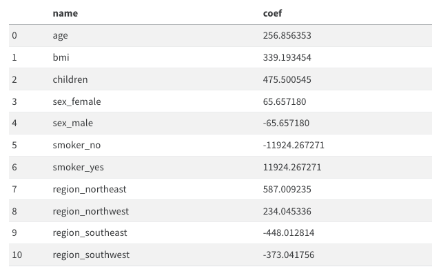
(11) 여성은 남성보다 평균적으로 보험료를 65.657180 만큼 더 낸다고 해석할 수 있다. F 65.657180*2 만큼 더낸다
(12) 나이가 1살 증가하면 보험료가 평균 256.856353 만큼 증가한다고 해석할 수 있다. T
(13) 보험료를 상대적으로 많이 내는 지역과 그렇지 않은 지역이 존재한다. T
(14) 흡연유무는 성별보다 보험료에 미치는 영향이 크다. T
(15)-(19) 아래는 모듈13에 대한 설명이다.
(15) 4.분석-실패에서 아래와 같은 에러메시지가 나오는 이유는 train data에 결측치가 포함되어 있기 때문이다. T
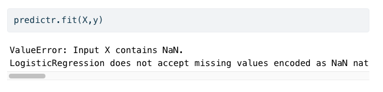
(16) 결측치가 하나라도 포함된 모든 열을 제거한다면 에러메시지를 피할수는 있겠으나 오버피팅이 발생할 가능성이 있다. F
(17) 따라서 결측치를 하나라도 포함된 모든 열을 제거한뒤 Lasso를 쓰면 오버피팅을 피할 수 있다. F
(18) 결측치가 존재할 경우, 결측치가 있는 열을 제외하고 분석하는 것이 유일한 해결방법은 아니다. 예를들면 결측치를 적당한 값으로 impute한 뒤 분석할 수도 있다. T
(19) train data와 test data에서 결측치가 포함된 행을 모두 제거한 뒤, train data 를 이용하여 적합을 시키고 test data 에서 예측한뒤 제출하는 것도 가능한 분석방법 중 하나이다. 즉 아래와 같은 의사코드는 가능한 분석방법 중 하나이다. F
df_train = 결측치가 포함된 행이 제거된 train data
df_test = 결측치가 포함된 행이 제거된 test data
X,y = df_train 을 적당히 잘 정리한 자료의 튜플형태
XX = df_test 를 적당히 잘 정리한 자료
predictr = sklearn.linear_model.LogisticRegression()
predictr.fit(X,y)
submission = predictr.predict(XX)의 값을 적당히 제출용으로 정리하여 만든 df(20)-(24) 아래는 모듈19, 모듈20 에 대한 설명이다.
(20) sklearn.preprocessing.MinMaxScaler()를 이용하여 스케일러를 생성하고 train data에 .fit_transform() method를 적용하면 항상 \([0,1]\) 사이의 값이 나온다. T
(21) sklearn.preprocessing.MinMaxScaler()를 이용하여 스케일러는 .inverse_transform() method를 가지고 있으며 이는 변환된 값을 원래로 되돌리는 역할을 한다. T
(22) sklearn.preprocessing.StandardScaler()는 데이터의 평균을 0, 표준편차를 1로 만드는 방식으로 조정한다. T
(23) 만약에 train data와 test data로 나누어진 상황에서 스케일러를 이용하여 데이터를 변환하려면 아래와 같은 순서를 따르는 것이 하나의 방법이다. T
- 적당한 scaler 생성이후 train data 를 입력으로 넣고
.fit_transform()method 사용 - 1과 동일한 scaler에 test data 를 입력으로 넣고
.transform()method 사용
(24) (23)과 동일한 상황에서 아래와 같은 변환도 해법이 될 수 있다. F
- 적당한 scaler 생성이후 train data, test data를 합쳐서 입력으로 넣고
.fit_transform()method 사용
(25)-(26) 아래는 모듈21 에 대한 설명이다.
(25) 밸런스게임을 통하여 많은 변수를 모을수록 train data 에 대한 score를 올릴 수 있다. T
(26) 이 모듈의 예시는 불필요한 변수의 추가가 오히려 학습에 방해되어 test score를 낮추는 현상이 생길 수 있음을 시사한다. T
(27)-(33) 아래는 모듈22 에 대한 설명이다.
(27) 이 모듈의 데이터에서 toeic과 toeic0의 상관계수값은 매우 높게 나올 것이다. T
(28) 이 모듈의 데이터에서 모든변수를 넣고 적합한다면,toeic, toeic0, ... ,toeic499에 적합된 계수값의 합은 0.01 정도의 값을 가진다. T
(29) 이 모듈의 데이터에서 gpa와 toeic만을 남기고 나머지 변수를 제거한뒤 돌리면 test score가 향상된다. T
(30) 즉 이 모듈의 데이터는 변수를 제거할수록 test score가 향상된다. 예를들면 gpa를 제거하여도 test score가 향상된다. F
(31) 이 예제에서 train score는 모든 데이터를 사용하여 적합하였을 경우 가장 높게 나타난다. T
(32) toeic, toeic1부터 toeic499까지의 변수들은 모두 employment_score와 높은 상관계수를 보인다. T
(33) 모듈22에 소개된 현상을 다중공선성이라고 말하며 이때는 계수값의 해석이 용이하지 않다. T
(34)-(38) 아래는 다중공선성과 Rigde, Lasso에 대한 종합적인 설명이다.
(34) 다중공선성이 발생할 경우 올바른 변수선택으로 언제나 문제를 해결할 수 있다. F
(35) 다중공선성이 발생할 경우 \({\bf X}\)의 correlation matrix는 단위행렬에 가깝게 나온다. F
(36) 다중공선성이 발생한다면 Ridge, Lasso와 같은 방법을 이용하여 해결할 수 있다. T
(37) 관측치의 수가 매우커진다면 (즉 데이터프레임에서 행의 숫자가 매우 커진다면) 다중공선성 문제가 심화될 가능성이 있다. F
(38) 다중공선성을 아래와 같은 시각화 코드로 진단할 수 있는 경우가 있다. T
sns.heatmap(df_train.corr(),annot=True)(39)-(42) 아래는 모듈23 에 대한 설명이다.
(39) toeic, toiec0, …, toeic499 에 대응하는 계수값의 합은 \(\alpha\) 와 관련없이 항상 일정하다. F
(40) 이 모듈에서 큰 \(\alpha\)는 토익계수들의 값을 점점 비슷하게 만들어 주는 효과가 있다. T
(41) toeic, toiec0, …, toeic499 에 대응하는 계수값들의 분산은 \(\alpha\)가 커짐에 따라 점점 작아진다. T
(42) \(\alpha\)를 매우 잘 선택한다면 모듈23-4.True 에서 소개된 바와 같이 적절한 변수선택을 할 수 있다. F
(43)-(44) 아래는 모듈25 에 대한 설명이다.
(43) \(\alpha\)가 커질수록 0이 아닌 계수값의 수는 점점 증가한다. F
(44) Lasso를 사용하면, 토익과 유사한 변수의 수가 증가할수록 test_score가 좋아진다. F
(45)-(47) 아래는 모듈27 에 대한 설명이다.
(45) 강의교재에 소개된 아래의 그림은 train score 보다 test score 가 낮은 상황이다. T
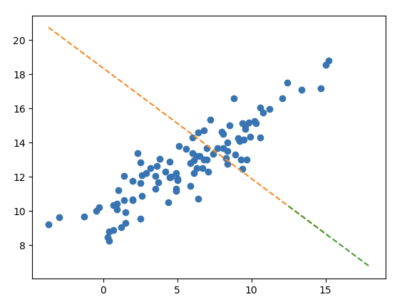
(46) 하지만 이러한 적합결과가 오버피팅이라고 보기는 어렵다. T
(47) 아웃라이어를 제거한다면 선형모형의 df_train, df_test에 대한 score가 모두 상승할 것이다. T
(48)-(50) 아래는 모듈29에 대한 설명이다.
(48) 모듈29, 4.분석에 소개된 아래와 같은 모형은
- \({\bf X}\):
Supplement,Exercise,Supplement\(\times\)Exercise - \({\bf y}\):
Weight_Loss
운동을 했으며, 보조제를 사용한 경우에 발생하는 추가적인 효과를 고려할 수 있다. T
(49) 이처럼 두 종류 이상의 범주형 범수가 존재하는 경우 범주형 범수간의 교호작용을 항상 고려해야 모형의 성능을 올릴 수 있다. F
(50) 실제로 교호작용이 있지만 이를 고려하지 않아서 모형의 성능이 떨어지는 경우는 언터피팅의 일종으로 볼 수 있다. T
2. 자료분석 (30점)
(1) 아래의 자료를 해석하고 세부지침에 맞추어 분석하라.
df_train = pd.read_csv('https://raw.githubusercontent.com/guebin/MP2023/master/posts/mid/icesales_train.csv')
df_test = pd.read_csv('https://raw.githubusercontent.com/guebin/MP2023/master/posts/mid/icesales_test.csv')세부지침
- 반응변수 \({\bf y}\)를
sales로 설정하고 나머지는 설명변수로 설정하라. df_test에sales에 대한 예측값을 포함하는 열을 추가하라.
데이터 살펴보기
df_train.head()| temp | type | sales | |
|---|---|---|---|
| 0 | 19.4 | choco | 64.807407 |
| 1 | 0.9 | vanilla | 25.656697 |
| 2 | 7.4 | vanilla | 34.756650 |
| 3 | 4.5 | choco | 27.265442 |
| 4 | 21.1 | choco | 70.606946 |
df_test.head()| temp | type | |
|---|---|---|
| 0 | 9.6 | vanilla |
| 1 | 17.4 | vanilla |
| 2 | 21.1 | vanilla |
| 3 | 21.5 | choco |
| 4 | 23.2 | choco |
df_train.info()<class 'pandas.core.frame.DataFrame'>
RangeIndex: 280 entries, 0 to 279
Data columns (total 3 columns):
# Column Non-Null Count Dtype
--- ------ -------------- -----
0 temp 280 non-null float64
1 type 280 non-null object
2 sales 280 non-null float64
dtypes: float64(2), object(1)
memory usage: 6.7+ KB# plt.plot(df_train['temp'],df_train['sales'],'o')
plt.plot(df_train[df_train.type=='choco'].temp,df_train[df_train.type=='choco'].sales,'o',label='choco')
plt.plot(df_train[df_train.type=='vanilla'].temp,df_train[df_train.type=='vanilla'].sales,'o',label='vanilla')
plt.legend()<matplotlib.legend.Legend at 0x7f82bde397f0>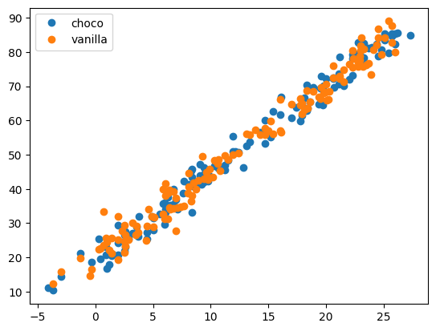
온도에 따라서 아이스크림의 판매량이 증가하고 있다.
아이스크림 타입별로 구분이 무의미해 보인다. (교호작용이 없어 보임)
데이터분석
## step1
X = pd.get_dummies(df_train[['temp','type']])
XX = pd.get_dummies(df_test[['temp', 'type']])
y = df_train[['sales']]
## step2
predictr = sklearn.linear_model.LinearRegression()
## step3
predictr.fit(X,y)
## step4
yhat = predictr.predict(XX)df_test = df_test.assign(yhat=yhat)
df_test| temp | type | yhat | |
|---|---|---|---|
| 0 | 9.6 | vanilla | 44.004419 |
| 1 | 17.4 | vanilla | 63.697748 |
| 2 | 21.1 | vanilla | 73.039456 |
| 3 | 21.5 | choco | 73.876470 |
| 4 | 23.2 | choco | 78.168606 |
| ... | ... | ... | ... |
| 115 | 5.1 | choco | 32.469982 |
| 116 | 12.8 | vanilla | 52.083733 |
| 117 | 22.9 | choco | 77.411170 |
| 118 | 8.4 | vanilla | 40.974676 |
| 119 | 6.0 | vanilla | 34.915190 |
120 rows × 3 columns
plt.plot(df_train['temp'],df_train['sales'],'o')
plt.plot(df_test['temp'],df_test['yhat'], 'o')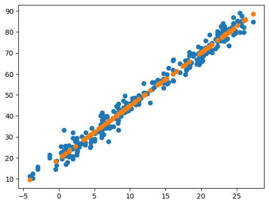
plt.plot(df_train[df_train.type=='choco'].temp,df_train[df_train.type=='choco'].sales,'o',label='choco',color='C0',alpha=0.5)
plt.plot(df_train[df_train.type=='choco'].temp,df_train[df_train.type=='choco'].sales_hat,'--',color='C0')
plt.plot(df_train[df_train.type=='vanilla'].temp,df_train[df_train.type=='vanilla'].sales,'o',label='vanilla',color='C1',alpha=0.5)
plt.plot(df_train[df_train.type=='vanilla'].temp,df_train[df_train.type=='vanilla'].sales_hat,'--',color='C1')
plt.plot(df_train['temp'],df_train['sales'],'o')
plt.plot(df_test['temp'],df_test['yhat'], 'o')
plt.legend()<matplotlib.legend.Legend at 0x7f82bdb6df10>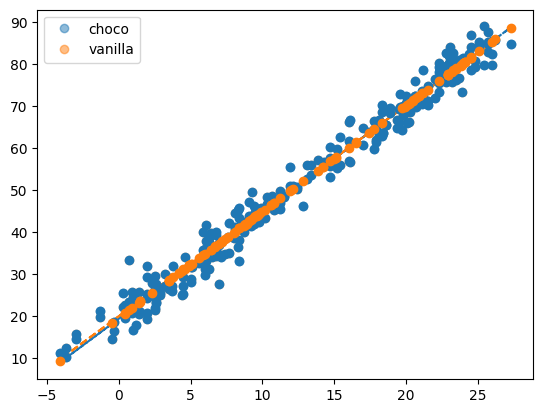
(2) 아래의 자료를 해석하고 세부지침에 맞추어 분석하라.
세부지침
- 반응변수 \({\bf y}\)를
height로 설정하고 나머지는 설명변수로 설정하라. df_test에height에 대한 예측값을 포함하는 열을 추가하라.
df_train = pd.read_csv('https://raw.githubusercontent.com/guebin/MP2023/master/posts/mid/height_train.csv')
df_test = pd.read_csv('https://raw.githubusercontent.com/guebin/MP2023/master/posts/mid/height_test.csv')df_train| weight | sex | height | |
|---|---|---|---|
| 0 | 71.169041 | male | 180.906857 |
| 1 | 69.204748 | male | 178.123281 |
| 2 | 49.037293 | female | 165.106085 |
| 3 | 74.472874 | male | 177.467439 |
| 4 | 74.239599 | male | 177.439925 |
| ... | ... | ... | ... |
| 275 | 72.105841 | male | 180.579718 |
| 276 | 72.008144 | male | 183.042456 |
| 277 | 48.589997 | female | 159.937014 |
| 278 | 80.803971 | male | 183.308227 |
| 279 | 42.634990 | female | 153.325140 |
280 rows × 3 columns
데이터 살펴보기
- df_train 정보 확인
df_train.info()<class 'pandas.core.frame.DataFrame'>
RangeIndex: 280 entries, 0 to 279
Data columns (total 3 columns):
# Column Non-Null Count Dtype
--- ------ -------------- -----
0 weight 225 non-null float64
1 sex 280 non-null object
2 height 280 non-null float64
dtypes: float64(2), object(1)
memory usage: 6.7+ KBdf_train.describe()| weight | height | |
|---|---|---|
| count | 225.000000 | 280.000000 |
| mean | 65.773407 | 174.605431 |
| std | 14.014774 | 9.430102 |
| min | 40.047170 | 148.975298 |
| 25% | 51.157668 | 167.572671 |
| 50% | 69.270680 | 175.186487 |
| 75% | 76.642564 | 181.132612 |
| max | 93.505001 | 195.797169 |
df_train.groupby('sex').describe().T| sex | female | male | |
|---|---|---|---|
| weight | count | 82.000000 | 143.000000 |
| mean | 49.567061 | 75.066557 | |
| std | 4.067440 | 7.858717 | |
| min | 40.047170 | 57.802771 | |
| 25% | 46.981788 | 70.126587 | |
| 50% | 49.372279 | 74.953426 | |
| 75% | 52.217482 | 80.492811 | |
| max | 59.052006 | 93.505001 | |
| height | count | 102.000000 | 178.000000 |
| mean | 165.234795 | 179.975122 | |
| std | 6.059964 | 6.294408 | |
| min | 148.975298 | 162.860389 | |
| 25% | 161.318427 | 176.045502 | |
| 50% | 165.276189 | 180.058265 | |
| 75% | 168.794055 | 183.693824 | |
| max | 183.625644 | 195.797169 |
df_train[df_train['weight'].isna()].head()| weight | sex | height | |
|---|---|---|---|
| 10 | NaN | male | 181.022441 |
| 11 | NaN | female | 168.038585 |
| 14 | NaN | female | 160.925313 |
| 16 | NaN | male | 170.981140 |
| 29 | NaN | female | 173.825733 |
- df_train에는 NaN값이 55개 있다. NaN값을 처리하기 이전에, 해당 데이터가 어떻게 되어있는지 nan값을 제외하고 시각화를 통해 확인해보자.
df_train_n = df_train.dropna().reset_index(drop=True)plt.plot(df_train_n['weight'], df_train_n['height'], 'o')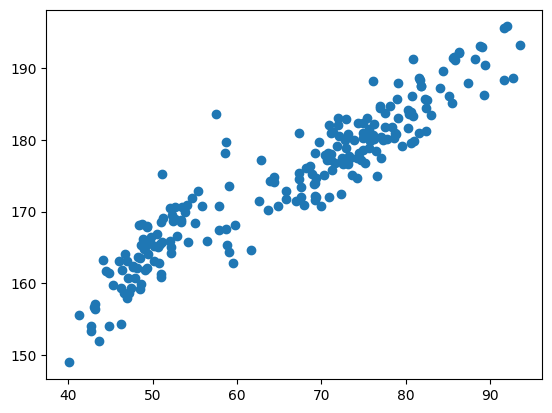
- 시각화를 해보았을 때, 성별 구분을 하지 않고 데이터를 살펴보면 일차 선형 추세보다 2차 추세가 있어보인다.
# step1
X = pd.get_dummies(df_train_n[['weight','sex']])
y = df_train_n['height']
# step2
predictr = sklearn.linear_model.LinearRegression()
# step3
predictr.fit(X,y)
# step4
df_train_n['height_hat'] = predictr.predict(X)plt.plot(df_train_n[df_train_n.sex=='male'].weight,df_train_n[df_train_n.sex=='male'].height,'o',label='male')
plt.plot(df_train_n[df_train_n.sex=='male'].weight,df_train_n[df_train_n.sex=='male'].height_hat,'--')
plt.plot(df_train_n[df_train_n.sex=='female'].weight,df_train_n[df_train_n.sex=='female'].height,'o',label='female')
plt.plot(df_train_n[df_train_n.sex=='female'].weight,df_train_n[df_train_n.sex=='female'].height_hat,'--')
plt.legend()<matplotlib.legend.Legend at 0x7f82bde89d90>
성별을 구분하여 시각화를 해보았을때, 성별에 따라 키와 몸무게에 영향을 끼쳐 보인다.
여성의 경우 이상값들이 몇 개 보인다. ——> 추후 NaN값을 대치할 때, 성별로 구분하고 이상값들은 제외하고 Impute하는게 좋을 것 같다.
df_test.info()<class 'pandas.core.frame.DataFrame'>
RangeIndex: 120 entries, 0 to 119
Data columns (total 2 columns):
# Column Non-Null Count Dtype
--- ------ -------------- -----
0 weight 95 non-null float64
1 sex 120 non-null object
dtypes: float64(1), object(1)
memory usage: 2.0+ KB- df_test데이터에도 weight값이 있다.
len(df_test[df_test['sex'] == 'female'])50df_test.describe()| weight | |
|---|---|
| count | 95.000000 |
| mean | 64.545461 |
| std | 14.916583 |
| min | 38.830724 |
| 25% | 50.107303 |
| 50% | 67.385533 |
| 75% | 77.459491 |
| max | 94.486442 |
df_test.groupby('sex').describe().T| sex | female | male | |
|---|---|---|---|
| weight | count | 40.000000 | 55.000000 |
| mean | 48.780459 | 76.010917 | |
| std | 4.820260 | 7.249173 | |
| min | 38.830724 | 59.387691 | |
| 25% | 45.780719 | 73.739790 | |
| 50% | 48.173989 | 76.400941 | |
| 75% | 51.791133 | 81.496914 | |
| max | 60.793693 | 94.486442 |
결측값 처리 후 데이터 분석
- 방법1 —-> drop
df_train = pd.read_csv('https://raw.githubusercontent.com/guebin/MP2023/master/posts/mid/height_train.csv')
df_test = pd.read_csv('https://raw.githubusercontent.com/guebin/MP2023/master/posts/mid/height_test.csv')df_train_n = df_train.dropna().reset_index(drop=True)
df_test_n = df_test.dropna().reset_index(drop=True)## step1
X = pd.get_dummies(df_train_n[['weight','sex']])
XX = pd.get_dummies(df_test_n[['weight', 'sex']])
y = df_train_n[['height']]
## step2
predictr = sklearn.linear_model.LinearRegression()
## step3
predictr.fit(X,y)
## step4
yhat = predictr.predict(XX)predictr.score(X,y)0.8957997115030892df_test_n['yhat'] = yhat
df_test_n| weight | sex | yhat | |
|---|---|---|---|
| 0 | 74.405638 | male | 179.442840 |
| 1 | 45.054381 | female | 160.702172 |
| 2 | 74.040455 | male | 179.136628 |
| 3 | 59.655090 | male | 167.074268 |
| 4 | 48.318398 | female | 163.439103 |
| ... | ... | ... | ... |
| 90 | 82.496975 | male | 186.227556 |
| 91 | 38.830724 | female | 155.483536 |
| 92 | 48.029580 | female | 163.196924 |
| 93 | 77.731773 | male | 182.231857 |
| 94 | 80.193741 | male | 184.296257 |
95 rows × 3 columns
plt.plot(df_train_n['weight'], df_train_n['height'], 'o')
plt.plot(df_test_n['weight'], df_test_n['yhat'],'x')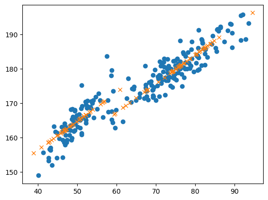
- 시각화를 확인해보면, 여성의 yhat은 기울기가 좀더 가파라야 할 것 같다.
- 방법2 —-> 평균(성별구분) 대치
df_train = pd.read_csv('https://raw.githubusercontent.com/guebin/MP2023/master/posts/mid/height_train.csv')
df_test = pd.read_csv('https://raw.githubusercontent.com/guebin/MP2023/master/posts/mid/height_test.csv')- 평균값으로 nan값 대치
female_mean = df_train[df_train['sex'] == 'female']['weight'].mean()
male_mean = df_train[df_train['sex'] == 'male']['weight'].mean()
(female_mean, male_mean)(49.567060917121516, 75.06655705102078)df_train.loc[(df_train['sex'] == 'female') & (df_train['weight'].isna()), 'weight'] = female_mean
df_train.loc[(df_train['sex'] == 'male') & (df_train['weight'].isna()), 'weight'] = male_mean
df_test.loc[(df_test['sex'] == 'female') & (df_test['weight'].isna()), 'weight'] = female_mean
df_test.loc[(df_test['sex'] == 'male') & (df_test['weight'].isna()), 'weight'] = male_meanX = pd.get_dummies(df_train[['weight','sex']])
XX = pd.get_dummies(df_test[['weight', 'sex']])
y = df_train[['height']]
predictr = sklearn.linear_model.LinearRegression()
predictr.fit(X,y)
yhat = predictr.predict(XX)predictr.score(X,y)0.8543631938325703df_test['yhat'] = yhat
df_test| weight | sex | yhat | |
|---|---|---|---|
| 0 | 74.405638 | male | 179.420931 |
| 1 | 45.054381 | female | 161.450840 |
| 2 | 74.040455 | male | 179.114719 |
| 3 | 59.655090 | male | 167.052359 |
| 4 | 48.318398 | female | 164.187771 |
| ... | ... | ... | ... |
| 115 | 48.029580 | female | 163.945592 |
| 116 | 49.567061 | female | 165.234795 |
| 117 | 75.066557 | male | 179.975122 |
| 118 | 77.731773 | male | 182.209948 |
| 119 | 80.193741 | male | 184.274348 |
120 rows × 3 columns
plt.plot(df_train['weight'], df_train['height'], 'o')
plt.plot(df_test['weight'], df_test['yhat'],'x')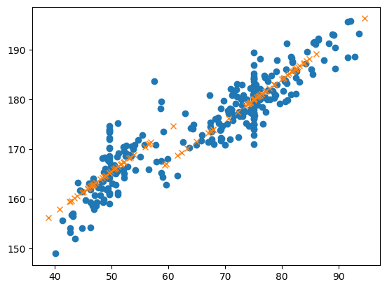
시각화를 확인해보면, drop한 시각화 결과값과 비슷해 보임
결측치를 모두 평균값으로 대치하다 보니 분산이 더 커진 느낌
- 방법3 —-> drop 이후 이차선형을 해보자.
- 데이터를 처음 살펴보았을 때, 데이터가 2차 선형 추세로 보였다. 결측값을 방법1에서 진행한 drop으로 처리하고 이차선형을 진행해보자
df_train = pd.read_csv('https://raw.githubusercontent.com/guebin/MP2023/master/posts/mid/height_train.csv')
df_test = pd.read_csv('https://raw.githubusercontent.com/guebin/MP2023/master/posts/mid/height_test.csv')
df_train_n = df_train.dropna().reset_index(drop=True)
df_test_n = df_test.dropna().reset_index(drop=True)from sklearn.preprocessing import PolynomialFeatures
from sklearn.linear_model import LinearRegression
# step 1
X = pd.get_dummies(df_train_n[['weight', 'sex']])
XX = pd.get_dummies(df_test_n[['weight', 'sex']])
y = df_train_n['height']
# step 2
poly = PolynomialFeatures(degree=2)
X_ = poly.fit_transform(X)
XX_ = poly.fit_transform(XX)
# step 3
predictr = LinearRegression()
predictr.fit(X_, y)
# Step 4: 예측
yhat = predictr.predict(XX_)df_test_n['yhat'] = yhat
df_test_n| weight | sex | yhat | |
|---|---|---|---|
| 0 | 74.405638 | male | 179.541829 |
| 1 | 45.054381 | female | 158.629433 |
| 2 | 74.040455 | male | 179.260442 |
| 3 | 59.655090 | male | 167.990971 |
| 4 | 48.318398 | female | 162.879433 |
| ... | ... | ... | ... |
| 90 | 82.496975 | male | 185.716853 |
| 91 | 38.830724 | female | 150.474275 |
| 92 | 48.029580 | female | 162.504119 |
| 93 | 77.731773 | male | 182.094037 |
| 94 | 80.193741 | male | 183.970729 |
95 rows × 3 columns
plt.plot(df_train_n['weight'], df_train_n['height'], 'o')
plt.plot(df_test_n['weight'], df_test_n['yhat'],'x')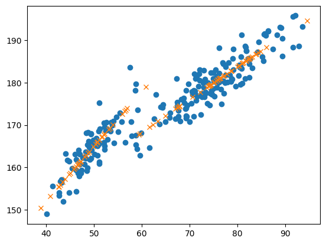
- 그래프로 확인했을 때 좀 더 잘 적합된것 같다. (성별구분도 잘 되어 잇는거 같다.)
- 방법4 —-> 이상값을 제거한 평균(성별구분) 대치 (설명만..)
여자의 데이터를 살펴보면, 이상값들이 있어보인다. 이상값들을 제거한 새로운 df값에서 결측치를 처리하고 분석하는 것이 나아보인다.
이상값을 제거하기 위한 방법으로 standardscaler를 이용해 적합하는 방법도 있고, 혹은 결측치를 제거한 값에서 적합한 선형모델의 신뢰구간을 구하고 신뢰구간에서 벗어난 값들을 이상치로 추정하여 제거하는 방법도 있을 것 같다.
제거 후에 결측값을 처리한다.(평균 등..)
(3) 아래의 자료를 해석하고 세부지침에 맞추어 분석하라.
df_train = pd.read_csv('https://raw.githubusercontent.com/guebin/MP2023/master/posts/mid/synthetic_train.csv')
df_test = pd.read_csv('https://raw.githubusercontent.com/guebin/MP2023/master/posts/mid/synthetic_test.csv')세부지침
- 반응변수 \({\bf y}\)를
y로 설정하고 나머지X1,X2,X3,X4는 설명변수로 설정하라. df_test에y에 대한 예측값을 포함하는 열을 추가하라.
데이터 살펴보기
- 결측값은 없다.
df_train.corr()| X1 | X2 | X3 | X4 | y | |
|---|---|---|---|---|---|
| X1 | 1.000000 | 0.076188 | 0.081018 | -0.016346 | 0.022207 |
| X2 | 0.076188 | 1.000000 | 0.908744 | -0.076805 | 0.799140 |
| X3 | 0.081018 | 0.908744 | 1.000000 | -0.083198 | 0.912513 |
| X4 | -0.016346 | -0.076805 | -0.083198 | 1.000000 | -0.027986 |
| y | 0.022207 | 0.799140 | 0.912513 | -0.027986 | 1.000000 |
sns.heatmap(df_train.corr(),annot=True, fmt=".7f") # 숫자 보여주는 옵션<Axes: >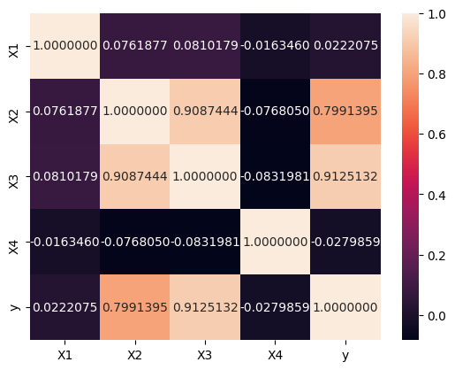
히트맵으로 확인해 보니 (X2,X3) 의 corr이 높아보인다.
종속변수 y와는 X2와 X3가 corr이 높아보인다.
히트맵으로 확인했을 때, X2와 X3중 하나만 남겨도 좋을 것 같다.
데이터분석
- 데이터에 다중공산성이 있어 보인다. ridge와 lasso를 사용해보자
df_train = pd.read_csv('https://raw.githubusercontent.com/guebin/MP2023/master/posts/mid/synthetic_train.csv')
df_test = pd.read_csv('https://raw.githubusercontent.com/guebin/MP2023/master/posts/mid/synthetic_test.csv')
## step1
X = df_train.drop(['y'],axis=1)
XX = df_test
y = df_train[['y']]
## step2
predictr = sklearn.linear_model.RidgeCV()
## step3
predictr.fit(X,y)
## step4
yhat = predictr.predict(XX)print(f'train_score: {predictr.score(X,y):.4f}')train_score: 0.8420(predictr.coef_, predictr.intercept_)(array([[-2.33391464, -1.66406577, 13.52591532, 2.19008175]]),
array([-10.69072811]))predictr.coef_.sum()11.718016648676223df_test['yhat'] = yhat
df_test| X1 | X2 | X3 | X4 | yhat | |
|---|---|---|---|---|---|
| 0 | 0.848150 | 2.120672 | 2.464867 | 0.418109 | 18.056099 |
| 1 | 0.577140 | 2.339529 | 2.704477 | 0.277340 | 21.257076 |
| 2 | 0.968286 | 1.570282 | 2.236010 | 0.791880 | 16.414684 |
| 3 | 0.065605 | 1.332800 | 1.591895 | 0.175372 | 8.854202 |
| 4 | 0.997962 | 2.216314 | 3.020515 | 0.932561 | 26.189631 |
| ... | ... | ... | ... | ... | ... |
| 115 | 0.543678 | 1.008793 | 2.192418 | 0.751022 | 17.660934 |
| 116 | 0.693956 | 1.978183 | 2.719313 | 0.267207 | 21.764218 |
| 117 | 0.405942 | 0.997256 | 1.913545 | 0.364545 | 13.383162 |
| 118 | 0.160230 | 0.253617 | 1.435839 | 0.139073 | 8.238895 |
| 119 | 0.080532 | 0.235460 | 1.123899 | 0.211455 | 4.394358 |
120 rows × 5 columns
- 릿지를 이용했을 때 X3의 계수값이 다른 계수들 값에 비해 큰 값을 가진다.
df_train = pd.read_csv('https://raw.githubusercontent.com/guebin/MP2023/master/posts/mid/synthetic_train.csv')
df_test = pd.read_csv('https://raw.githubusercontent.com/guebin/MP2023/master/posts/mid/synthetic_test.csv')
## step1
X = df_train.drop(['y'],axis=1)
XX = df_test
y = df_train[['y']]
## step2
predictr = sklearn.linear_model.LassoCV()
## step3
predictr.fit(X,y)
## step4
yhat = predictr.predict(XX)/home/coco/anaconda3/envs/py38/lib/python3.8/site-packages/sklearn/linear_model/_coordinate_descent.py:1568: DataConversionWarning: A column-vector y was passed when a 1d array was expected. Please change the shape of y to (n_samples, ), for example using ravel().
y = column_or_1d(y, warn=True)print(f'train_score: {predictr.score(X,y):.4f}')train_score: 0.8321(predictr.coef_, predictr.intercept_)(array([-0. , -0. , 11.85387587, 0. ]),
-9.006433120791534)predictr.coef_.sum()11.853875870263957df_test['yhat'] = yhat
df_test| X1 | X2 | X3 | X4 | yhat | |
|---|---|---|---|---|---|
| 0 | 0.848150 | 2.120672 | 2.464867 | 0.418109 | 20.211794 |
| 1 | 0.577140 | 2.339529 | 2.704477 | 0.277340 | 23.052106 |
| 2 | 0.968286 | 1.570282 | 2.236010 | 0.791880 | 17.498951 |
| 3 | 0.065605 | 1.332800 | 1.591895 | 0.175372 | 9.863691 |
| 4 | 0.997962 | 2.216314 | 3.020515 | 0.932561 | 26.798372 |
| ... | ... | ... | ... | ... | ... |
| 115 | 0.543678 | 1.008793 | 2.192418 | 0.751022 | 16.982217 |
| 116 | 0.693956 | 1.978183 | 2.719313 | 0.267207 | 23.227970 |
| 117 | 0.405942 | 0.997256 | 1.913545 | 0.364545 | 13.676486 |
| 118 | 0.160230 | 0.253617 | 1.435839 | 0.139073 | 8.013828 |
| 119 | 0.080532 | 0.235460 | 1.123899 | 0.211455 | 4.316122 |
120 rows × 5 columns
라쏘를 이용했을 때 X3외에 다른 계수 값들은 다 0으로 추정하였다.
릿지, 라쏘를 확인했을 때 X2보다 X3가 더 유의미한 변수로 보인다. X2를 제거해 보자.
df_train = pd.read_csv('https://raw.githubusercontent.com/guebin/MP2023/master/posts/mid/synthetic_train.csv')
df_test = pd.read_csv('https://raw.githubusercontent.com/guebin/MP2023/master/posts/mid/synthetic_test.csv')
## step1
X = df_train.drop(['y','X2'],axis=1)
XX = df_test.drop(['X2'],axis=1)
y = df_train[['y']]
## step2
predictr = sklearn.linear_model.LinearRegression()
## step3
predictr.fit(X,y)
## step4
yhat = predictr.predict(XX)print(f'train_score: {predictr.score(X,y):.4f}')train_score: 0.8376(predictr.coef_, predictr.intercept_)(array([[-2.74165853, 12.28614251, 2.58080696]]), array([-9.88442786]))df_test['yhat'] = yhat
df_test| X1 | X2 | X3 | X4 | yhat | |
|---|---|---|---|---|---|
| 0 | 0.848150 | 2.120672 | 2.464867 | 0.418109 | 19.152999 |
| 1 | 0.577140 | 2.339529 | 2.704477 | 0.277340 | 22.476606 |
| 2 | 0.968286 | 1.570282 | 2.236010 | 0.791880 | 16.976486 |
| 3 | 0.065605 | 1.332800 | 1.591895 | 0.175372 | 9.946554 |
| 4 | 0.997962 | 2.216314 | 3.020515 | 0.932561 | 26.896733 |
| ... | ... | ... | ... | ... | ... |
| 115 | 0.543678 | 1.008793 | 2.192418 | 0.751022 | 17.499593 |
| 116 | 0.693956 | 1.978183 | 2.719313 | 0.267207 | 22.312462 |
| 117 | 0.405942 | 0.997256 | 1.913545 | 0.364545 | 13.453517 |
| 118 | 0.160230 | 0.253617 | 1.435839 | 0.139073 | 7.676122 |
| 119 | 0.080532 | 0.235460 | 1.123899 | 0.211455 | 4.248884 |
120 rows × 5 columns
- X2를 제거한 선형 모델이 릿지, 라쏘를 이용한 모델과 비슷한 계수값의 합이 보인다. 즉 X2와 X3는 유의한 변수로 서로 영향을 끼친다.
3. 연구 (20점)
아래의 코드를 이용하여 자료를 불러오라.
np.random.seed(42)
df = pd.read_csv("https://raw.githubusercontent.com/guebin/MP2023/main/posts/employment_multicollinearity.csv")
df['employment_score'] = df.gpa * 1.0 + df.toeic* 1/100 + np.random.randn(500)
df_train, df_test = sklearn.model_selection.train_test_split(df,test_size=0.3,random_state=42)아래의 절차에 따라 자료를 연구하라. 결과를 해석하라.
- 종속변수 \({\bf y}\)를
employment_score로 설정하고 나머지는 설명변수로 설정하라. sklearn.linear_model.Ridge를 이용하여 \(\alpha = [10^1, 10^{1.5}, 10^2, 10^{2.5}, \dots, 10^{9}]\)에 대해 predictor를 생성하라.- \(\alpha\)의 변화에 따른 train score 와 test score 의 변화를 시각화하라.
- \(\alpha\)에 변화에 따른
predictor가 학습한 coefficient값 (predictor.coef_) 들의 분산변화와 L2-penalty를 시각화하라.
구현시 20점, 결과해석이 추가되면 가산점 4점
jupyter: kernelspec: display_name: Python 3 (ipykernel) language: python name: python3 language_info: codemirror_mode: name: ipython version: 3 file_extension: .py mimetype: text/x-python name: python nbconvert_exporter: python pygments_lexer: ipython3 version: 3.10.13
df.head()| employment_score | gpa | toeic | toeic0 | toeic1 | toeic2 | toeic3 | toeic4 | toeic5 | toeic6 | ... | toeic490 | toeic491 | toeic492 | toeic493 | toeic494 | toeic495 | toeic496 | toeic497 | toeic498 | toeic499 | |
|---|---|---|---|---|---|---|---|---|---|---|---|---|---|---|---|---|---|---|---|---|---|
| 0 | 1.898249 | 0.051535 | 135 | 129.566309 | 133.078481 | 121.678398 | 113.457366 | 133.564200 | 136.026566 | 141.793547 | ... | 132.014696 | 140.013265 | 135.575816 | 143.863346 | 152.162740 | 132.850033 | 115.956496 | 131.842126 | 125.090801 | 143.568527 |
| 1 | 9.567232 | 0.355496 | 935 | 940.563187 | 935.723570 | 939.190519 | 938.995672 | 945.376482 | 927.469901 | 952.424087 | ... | 942.251184 | 923.241548 | 939.924802 | 921.912261 | 953.250300 | 931.743615 | 940.205853 | 930.575825 | 941.530348 | 934.221055 |
| 2 | 7.726123 | 2.228435 | 485 | 493.671390 | 493.909118 | 475.500970 | 480.363752 | 478.868942 | 493.321602 | 490.059102 | ... | 484.438233 | 488.101275 | 485.626742 | 475.330715 | 485.147363 | 468.553780 | 486.870976 | 481.640957 | 499.340808 | 488.197332 |
| 3 | 3.352731 | 1.179701 | 65 | 62.272565 | 55.957257 | 68.521468 | 76.866765 | 51.436321 | 57.166824 | 67.834920 | ... | 67.653225 | 65.710588 | 64.146780 | 76.662194 | 66.837839 | 82.379018 | 69.174745 | 64.475993 | 52.647087 | 59.493275 |
| 4 | 8.178203 | 3.962356 | 445 | 449.280637 | 438.895582 | 433.598274 | 444.081141 | 437.005100 | 434.761142 | 443.135269 | ... | 455.940348 | 435.952854 | 441.521145 | 443.038886 | 433.118847 | 466.103355 | 430.056944 | 423.632873 | 446.973484 | 442.793633 |
5 rows × 503 columns
X = df_train.drop(['employment_score'],axis=1)
XX = df_test.drop(['employment_score'],axis=1)
y = df_train[['employment_score']]
yy = df_test[['employment_score']]
alpha = [10**i for i in np.arange(1, 9, 0.5)]
Ridge_ = []
train_scores = []
test_scores = []
coef_var = []
l2 = []
for alpha in alpha:
predictr = sklearn.linear_model.Ridge(alpha)
predictr.fit(X,y)
Ridge_.append(predictr)
train_score = predictr.score(X, y)
train_scores.append(train_score)
test_score = predictr.score(XX, yy)
test_scores.append(test_score)
coef = predictr.coef_
coef_var.append(np.var(coef))
l2.append(((coef)**2).sum())alpha = [10**i for i in np.arange(1, 9, 0.5)]
df2 = pd.DataFrame({'alpha':alpha, 'train score':train_scores, 'test score':test_scores, 'l2':l2})
df2| alpha | train score | test score | l2 | |
|---|---|---|---|---|
| 0 | 1.000000e+01 | 1.000000 | 0.277359 | 5.459046e-02 |
| 1 | 3.162278e+01 | 0.999997 | 0.280948 | 5.416616e-02 |
| 2 | 1.000000e+02 | 0.999973 | 0.291812 | 5.287783e-02 |
| 3 | 3.162278e+02 | 0.999760 | 0.322006 | 4.926543e-02 |
| 4 | 1.000000e+03 | 0.998253 | 0.389748 | 4.096235e-02 |
| 5 | 3.162278e+03 | 0.990998 | 0.492017 | 2.778880e-02 |
| 6 | 1.000000e+04 | 0.968966 | 0.590661 | 1.458607e-02 |
| 7 | 3.162278e+04 | 0.923821 | 0.663610 | 5.727399e-03 |
| 8 | 1.000000e+05 | 0.859300 | 0.708467 | 1.575327e-03 |
| 9 | 3.162278e+05 | 0.798805 | 0.728958 | 2.884292e-04 |
| 10 | 1.000000e+06 | 0.763049 | 0.735974 | 3.817315e-05 |
| 11 | 3.162278e+06 | 0.748124 | 0.738125 | 4.406531e-06 |
| 12 | 1.000000e+07 | 0.742897 | 0.738792 | 6.345675e-07 |
| 13 | 3.162278e+07 | 0.741183 | 0.739016 | 2.424987e-07 |
| 14 | 1.000000e+08 | 0.740598 | 0.739109 | 2.008111e-07 |
| 15 | 3.162278e+08 | 0.740046 | 0.738954 | 1.904764e-07 |
plt.plot(df2['alpha'], df2['train score'], label='Train Score', marker='o')
plt.plot(df2['alpha'], df2['test score'], label='Test Score', marker='x')
plt.xlabel('alpha')
plt.legend()
plt.xticks(df2['alpha'])
plt.xlabel('alpha')
for i, (x_train, y_train, x_test, y_test) in enumerate(zip(df2['alpha'], df2['train score'], df2['alpha'], df2['test score'])):
plt.annotate(f'{i}', (x_train, y_train), textcoords="offset points", xytext=(0, 10), ha='center')
plt.annotate(f'{i}', (x_test, y_test), textcoords="offset points", xytext=(0, 10), ha='center')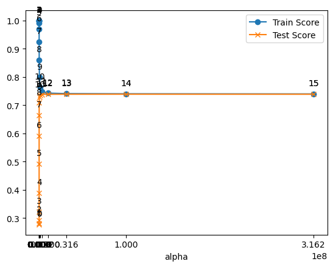
ridge를 이용하여 계수들의 값이 동일하게 나누는 효과가 나타난다.
alpha의 인덱스가 12정도 되었을 때(alpha=1.000000e+07) train/test score값이 비슷한 값을 유지한다. 이는 ridge를 이용해 패널티를 줘서 몇 개의 변수로만 특정값을 설명하기 어렵게 만들기 때문이다. 즉 계수들의 값을 서로 비슷하게 나눈다.
plt.plot(alpha, coef_var, marker='o')
plt.title('alpha:coefficient_variance')
plt.xticks(df2['alpha'])
plt.xlabel('alpha')
for i, (x, y) in enumerate(zip(alpha, coef_var)):
plt.annotate(f'{i}', (x, y), textcoords="offset points", xytext=(0,10), ha='center')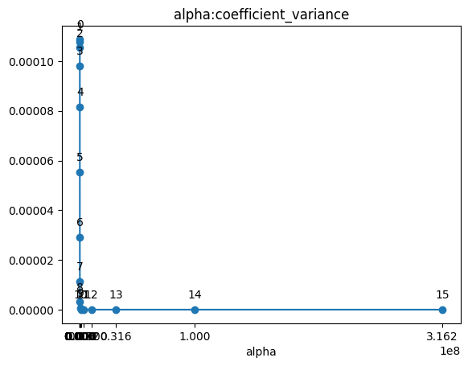
- alpha값이 커질 수록 coef의 분산은 작아진다. alpha의 인덱스가 12정도 되었을 때는 L2-norm을 통해 계수들의 값을 비슷한 크기로 만드므로 그 이후의 coef의 분산값은 유사하게 나타난다.
plt.plot(alpha, l2, marker='o')
plt.title('alpha:l2')
plt.xticks(df2['alpha'])
plt.xlabel('alpha')
for i, (x, y) in enumerate(zip(alpha, l2)):
plt.annotate(f'{i}', (x, y), textcoords="offset points", xytext=(0,10), ha='center')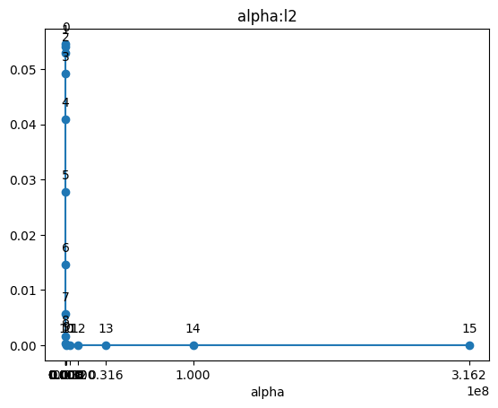
- l2 penalty값은 위의 분산 그래프와 동일하게 그려진다.